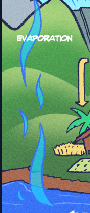
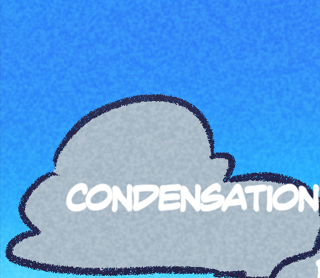
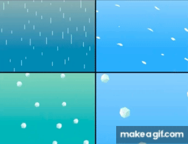
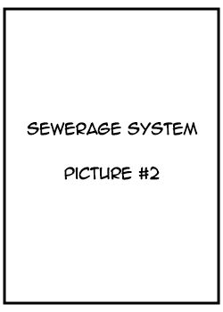

EVAPORATION
Evaporation is when liquid water turns into water vapor because of heat. The sun is the main source of this heat. This process helps move water into the atmosphere.

CONDENSATION
Condensation happens when water vapor cools and turns into liquid water. This is how clouds form in the sky. You can also see it as droplets on a cold glass.

PRECIPITATION
Precipitation is water that falls from clouds to the Earth. It can be rain, snow, sleet, or hail. It is an important part of the water cycle.

Water for Agricultural Use
Water for agricultural use is used in farming and food production. It helps irrigate crops and provide water for animals. This is essential for growing food and sustaining agriculture.
Bio-Solids as Fertilizer
Bio-solids are treated organic materials from wastewater. They can be used as fertilizer to help plants grow. They add nutrients to the soil.
Sewerage System
Sewerage System is the complete system used to manage wastewater from homes, buildings, and industries. It includes collecting sewage, transporting it through pipes, treating it in treatment plants, and safely disposing or reusing the cleaned water. This system helps keep communities clean, prevents pollution, and protects public health.
A. Sewer lines are underground pipes that transport wastewater. They connect homes and buildings to treatment plants. They help prevent pollution and keep waste flowing properly.

Sewerage System
B. Septage Collection - Not all homes are connected to sewer lines. In these areas, homes use septic tanks or pits (like a pozo negro). When trucks collect waste from these toilets or pits, it is called septage collection or desludging. The trucks (often called vacuum trucks) suck out the waste for safe transport and proper treatment.
Treated Water
Treated water is water that has been cleaned to remove dirt, waste, and harmful germs. It is usually released into rivers or reused for irrigation and other non-drinking purposes. In the Philippines, it is generally not used for drinking unless it goes through additional treatment.

Water Treatment
Water Treatment is the process of cleaning water so it is safe to use. It removes dirt, bacteria, and harmful chemicals. This makes water safe for drinking and everyday use.
Residential & Commercial Water Use
Residential and commercial water use is water used in homes for daily activities like cooking, cleaning, and bathing. Commercial water use is water used in businesses like malls, hotels, and restaurants. Both are important for daily life and services.
Waste Water Treatment
Wastewater treatment cleans used water from homes and industries. It removes harmful substances before releasing the water back into the environment. This protects people and ecosystems.